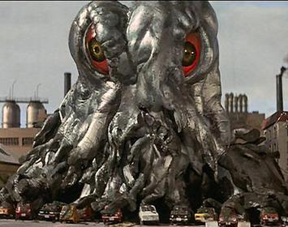
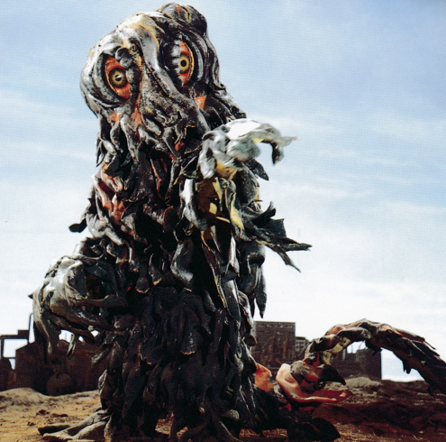
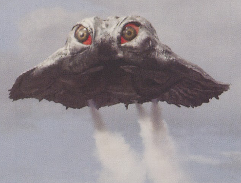

Información del Personaje
Origen:Nebulosa Gaseosa Oscura de Orión
Altura:60 metros
Peso: 70,000 toneladas
Alianza: AMENAZA OMEGA EXTREMA
Historia
Hedorah representa una de las amenazas biológicas más peligrosas jamás registradas por la WKDF. Esta criatura, de origen extraterrestre, se alimenta de la contaminación industrial y convierte desechos tóxicos en energía pura, creciendo y mutando con cada absorción. Su forma es amorfa y adaptable, lo que lo hace casi imposible de contener mediante métodos tradicionales.
La WKDF ha clasificado a Hedorah como una Amenaza Omega Extrema, situándolo incluso por encima de Godzilla en términos de nivel de riesgo. A diferencia de Godzilla, que puede ser persuadido o neutralizado por otras fuerzas kaiju, Hedorah no posee instintos comprensibles ni un código de comportamiento. Es pura destrucción química y ecológica.
Hedorah es una amenaza continua, latente y potencialmente apocalíptica. Su capacidad para adaptarse, regenerarse y propagarse lo convierte en el enemigo natural no solo de la humanidad, sino del planeta mismo. La WKDF considera su neutralización o erradicación una prioridad absoluta en caso de resurgimiento, superando incluso la alerta asignada a Godzilla. Cualquier avistamiento o rastro de actividad asociada debe ser reportado y atendido con máxima urgencia.
Protocolos de Interacción
1.Vigilancia ambiental: Monitoreo constante de zonas industriales, plantas nucleares y vertederos en el mundo.
2.Despliegue inmediato de fuerzas antikaiju: Protocolos de respuesta rápida con armamento especializado en contención biológica y térmica.
3.Colaboración con entidades kaiju aliadas: Se ha intentado en el pasado que Godzilla y Gamera confronten a Hedorah, con resultados mixtos.
4.Investigación científica activa: Desarrollo de tecnología de purificación atmosférica y láseres de alta temperatura para descomponer la estructura química de Hedorah.
Imagen del Sujeto
Habilidades
Lodo Acido
Hedorah está compuesto casi en su totalidad de un mineral llamado Hedrium, un material ácido y viscoso, que utiliza como principal medio de ataque. Puede lanzar fragmentos de su cuerpo a sus oponentes, quemándolos o asfixiándolos. Al usar Hedrium de esta manera, Hedorah demuestra una precisión impresionante, ya que logró disparar con precisión un pequeño fragmento de su cuerpo al ojo de Godzilla, infligiéndole una grave quemadura química.
Evolucion
Al alimentarse de contaminantes (ya sean derrames de petróleo, basura inorgánica o su alimento favorito, el smog), Hedorah puede crecer considerablemente y evolucionar hacia formas nuevas y más poderosas. Hedorah comenzó siendo una criatura completamente acuática, similar a un renacuajo, pero evolucionó para desarrollar patas que le permitieron llegar a la tierra y acceder a más contaminantes. Su siguiente evolución le otorgó la capacidad de volar y cubrir grandes distancias rápidamente al igual que esparcir su niebla de acido sulfurico. Su etapa final, la etapa perfecta, fue una gigantesca forma bípeda que superaba en altura a Godzilla y le permitía enfrentarse a él en un combate cuerpo a cuerpo, puede cambiar a voluntad propia entre esta forma y forma voladora.
Niebla de Acido Sulfurico
Originario de la Nebulosa Gaseosa Oscura de Orión, donde no existe oxígeno, pero sí compuestos químicos que también existen como contaminantes en la Tierra, Hedorah no necesita oxígeno para sobrevivir, sino que se nutre de la inhalación o el consumo de contaminantes tóxicos para impulsar su metabolismo. El subproducto de la ingestión de estos contaminantes por parte de Hedorah es una Niebla de Ácido Sulfúrico altamente concentrada, una corriente de vapor similar a una niebla de ácido sulfúrico altamente concentrado, capaz de corroer cualquier metal y desintegrar casi por completo la vida orgánica, derritiendo a los humanos de sus huesos en cuestión de segundos. En su Etapa de Vuelo, Hedorah también podía volar impulsándose por el aire con esta niebla, extendiéndola por una amplia área en el proceso.
Videos de Metraje Encontrado
Video de Evidencia 1: Hedorah causa caos en el oceano.
Video de Evidencia 2: Hedorah libera una nube de contaminación en una base militar
Video de Evidencia 3: Cientificos hablando sobre el origen de Hedorah
Video de Evidencia 4: Godzilla vs Hedorah